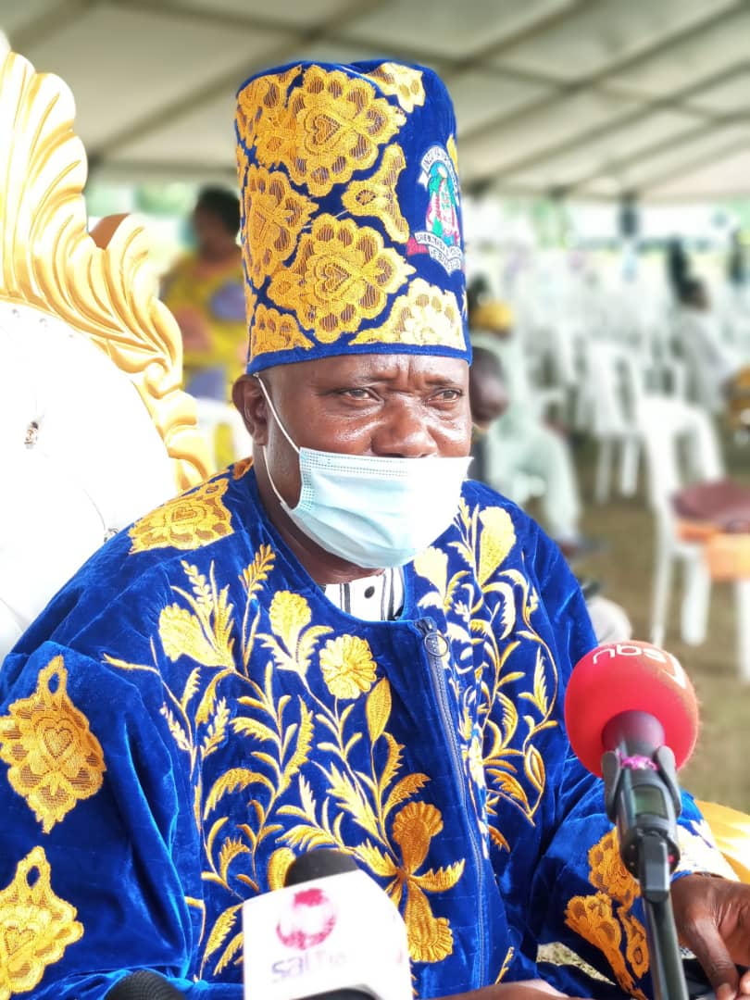

KINSHIP OF BUGISU
.jpg) |
 |
 |
 |
|---|---|---|---|
| Uwelukoosi Umukuuka Wilson Wamimbi Wgasa. The first Umukuuka(king) of Bamasaaba |
Uwelukoosi Umukuuka sir Bob mushikori. the second Umukuuka of bugisu |
Uwelukoosi Umukuuka John Amram Wagabyalire. The third Umukuuka of bugisu |
Uwelukoosi umukuka Mike Jude Mudoma |